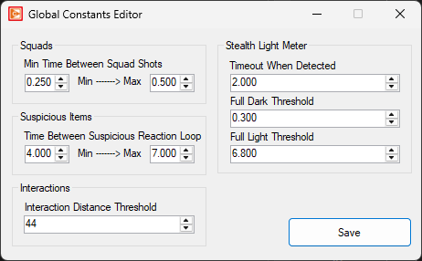

Global Constants
To edit global constants in OpenCAGE navigate to Edit > Configurations > Core Game > Global Constants.
From here you will be presented with a variety of options which apply across various core systems in the game.
Read on to see a list of available properties with information about each.

Squads
-
Min Time Between Squad ShotsfloatMinimum: 0.1Maximum: 10 - Defines the minimum and maximum time NPCs within a squad take between shooting.
Suspicious Items
-
Time Between Suspicious Reaction LoopfloatMinimum: 0.1Maximum: 10 - Defines the minimum and maximum time an NPC takes before looping its reaction to a suspicious item.
Interactions
-
Interaction Distance ThresholdfloatMinimum: 0Maximum: 999 - Defines the distance at which UI_Icon entities are out of interaction range.
Stealth Light Meter
-
Timeout When DetectedfloatMinimum: 0Maximum: 100 - Defines the time to disable the stealth light meter for after being detected.
-
Full Dark ThresholdfloatMinimum: 0Maximum: 1 - If the light meter's luminance is below this threshold, it is considered 'dark'.
-
Full Light ThresholdfloatMinimum: 0Maximum: 1 - If the light meter's luminance is below this threshold but above full dark, it's considered 'partially lit'. If it's over this valid, it's considered 'fully lit'.